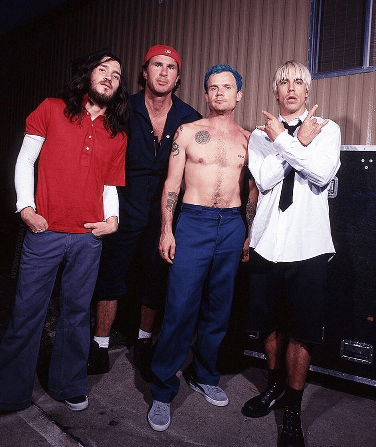
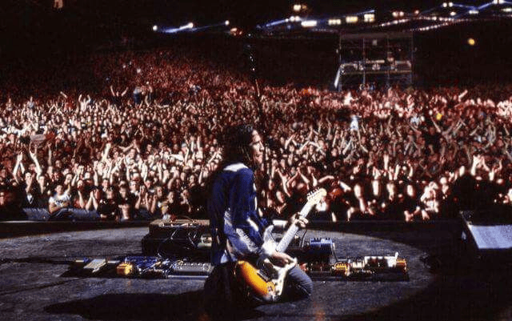
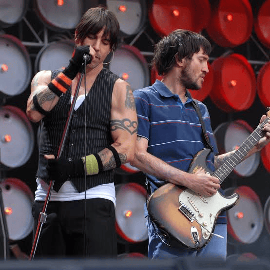

Red Hot Chili Peppers es una famosa banda de rock de Estados Unidos. Nació en el año 1983 en la ciudad de Los Ángeles, California. Mezclan ritmos de funk, punk rock y rap para crear un estilo único y muy enérgico. Sus miembros más conocidos son el cantante Anthony Kiedis, el bajista Flea, el guitarrista John Frusciante y el baterista Chad Smith.
La discografía de Red Hot Chili Peppers consta de 13 álbumes de estudio que definen la evolución del rock alternativo y el funk-rock desde 1984. Pasaron de ser una banda underground y callejera de Los Ángeles a llenar estadios en todo el mundo, marcados por idas y regresos de integrantes clave como el guitarrista John Frusciante.
Los Red Hot Chili Peppers cerraron el caótico festival Woodstock '99 el 25 de julio de 1999. Su presentación coincidió con el estallido de disturbios masivos, incendios descontrolados y saqueos, impulsados por el descontento general del público ante las paupérrimas condiciones del predio, culminando en una noche tristemente célebre.

es el legendario concierto de los Red Hot Chili Peppers grabado el 23 de agosto de 2003 ante más de 80,000 personas en el histórico Slane Castle en Irlanda. Considerado una de sus mejores actuaciones en vivo, el show destacó por el alto nivel de la banda y el virtuosismo del guitarrista John Frusciante.

El 7 de julio de 2007, Red Hot Chili Peppers se presentó en el nuevo Estadio de Wembley en Londres, Inglaterra, como parte del festival global Live Earth. Fue un concierto corto pero intenso enfocado en crear conciencia sobre la crisis climática.
